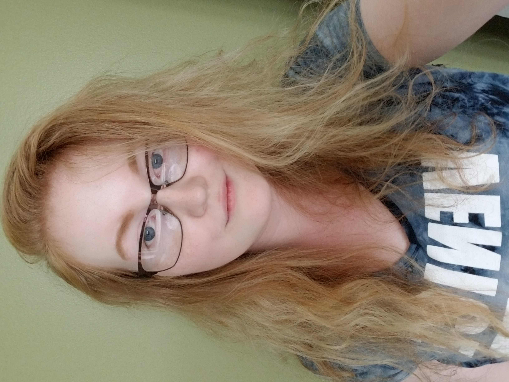
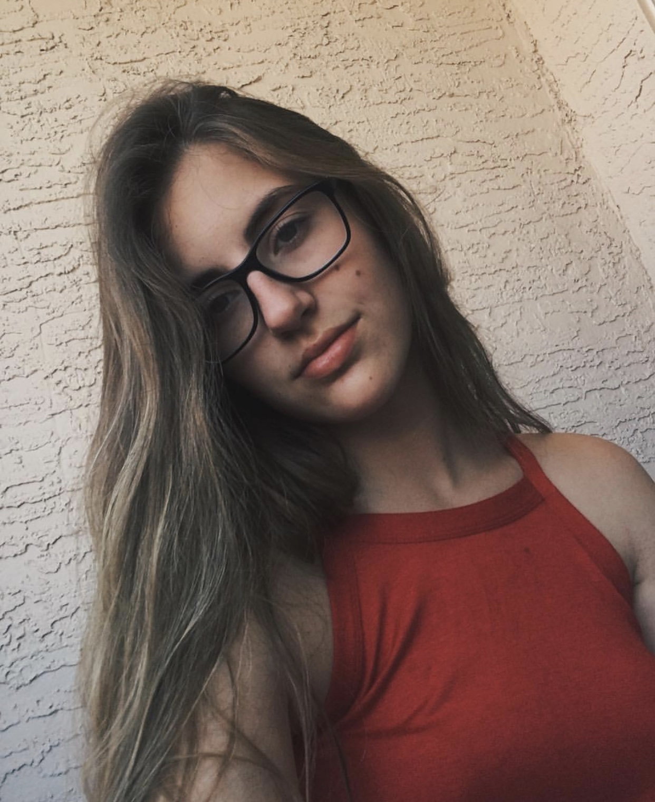

Our Bio Page
Hi, My name is Emily I am 19 years old and I am from Sarnia, On. I was born in Belleville, On but moved to Sarnia when I was 6 years old. I have one older brother, his name is Dan and he is 22. My parents are divorced so I grew up switching between households but primarily lived with my mom. I have one dog at my mom’s house. His name is Olaf (like the snowman), he is 2 years old, and he is an English Bulldog. We tend to call him Loaf because he likes to just lay around the house.
I like to dance, Ive taken dance classes for 12 years. My main dance style is Tap. In Highschool I took Music class all the way through and I know how to play the Flute, Alto Saxophone, Tenor Saxophone, and Piccolo. In Highschool I was also in my school drumline for 4 years, I played the Quad (it's the drum with 4 drums in different pitches, hense the name) and preformed in over 30 parades. I like to draw and paint, my favourite style to draw in is realisim or as close to realisim i can get. My favourite subject to draw is portait work. I like to play video games too, my favourite game so far is Final Fanstasy 15.
Hi! My name is Haley. I was born in November 1997, so I'm 21 years old. I was born in Seattle, USA but I grew up here in London. I'm the oldest child of 8, my siblings' ages range from 2 to 20. I'm a first year in Fanshawe's Interactive Media Design program after working full-time for 3 years since leaving high school. I was briefly part of the BealArt program but I had to leave in 2016 as I had moved out of the house and needed to be able to pay rent. I regretted leaving the program as I was very intent at the time on getting into a creative career. At the time, I believed I would only be happy doing something completely artistic, like doing freelance digital artwork or animation. It was only after researching some design programs that I came across Interactive Media Design and realized it fit perfectly for me, as I had just started learning computer programming when I left school as well and found I was very interested in development too, almost as much as I was interested in art.
I was introduced to design and development from a young age, as my father founded rTraction, a digital services agency, when I was a baby, and remains the CEO of the company to this day. I got to know a few of my dad's friends and employees when I was a child, visiting the office was always something I considered exciting and fun. Throughout high school, I spent a lot of time at my dad's office as the location was down the street from my high school (LCSS) and I would go there after school every day to study and wait for a ride home. I would observe the work that the employees were doing and listen attentively to my dad's phone calls with clients and team members in the car to try to get an idea of what was going on. I started learning a bit of graphic design and coding elements on my own, which means that what we're learning in IDP is slightly familiar to me -- and it's exciting, because both design and development are things that I've always had an interest in!
With how busy I am doing both work and school full-time, I don't participate as much in my personal hobbies anymore, but I love to draw people (either realistic-ish portraits or cartoons), paint (mostly in acrylic), write, and play "nerd" games with friends (namely D&D and Magic: The Gathering.) If I had more time, I would get back into playing music, as I used to play the double bass, guitar and piano! At the moment, the only instruments I own are an acoustic guitar and an otamatone.

Hi, my name is Marisa Settimi and I’m a first year Interactive Media Development – 3D Visualization student. I am 19 years old and I’m from Hamilton, Ontario. I grew up with 2 siblings, my sister Marina and my half brother Ryan and my parents. I love being creative and using my artistic ability to draw, paint, create posters and logos. My passion is also to volunteer and help people.
I was apart of many volunteer clubs in High School. It was the same few of us that would run each committee because that’s what we loved to do. I was the tech head in each committee, I’d design our t-shirts, posters, logos, flyers and videos. That’s where my passion started, it never felt like work to me. I always had a great time being creative and thinking of ideas.
I grew up wanting to be a Disney artist but as I got to High School I realized that there weren’t many art classes and the mandatory classes were all science, english and math based. In grade 11 when we had to choose our career path I blindly chose Nursing not realizing what that entails as a career. After a year of science and math classes, I was sitting in a Grade 12 bio class when I realized it wasn’t for me and I couldn’t see myself doing this in post-secondary as well as the rest of my life. I went home and started looking at design programs all over Ontario. I never thought that I could go into a career and be able to make money with something I really enjoyed doing.
